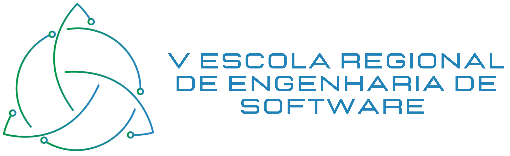

<div class="d-flex justify-content-center">
    <!-- centralizando o texto: text-justify, text-center, text-begin (a direita), text-end (a esquerda) -->
    <div class="text-justify col-md-12"> 

        <!-- titulo -->
        <h4 class="page_title"><i class="fa fa-computer mx-2"></i> Curso</h4>

        <!-- pula linha com linha cortando -->
        <hr />

        <!-- pula linha -->
        <div class="text-center">
             
            <br />
            <hr>
        </div>
        <h2>Submissão de Trabalhos:</h2>
				<p>
 
				A ERES 2021 incentiva a apresentação de trabalhos de pesquisa ou relatos de experiência originais em engenharia de software, desenvolvidos por acadêmicos de graduação, pós-graduação ou profissionais da indústria. 
 
				<br><br>Os artigos devem possuir no mínimo 6 páginas e no máximo 10 páginas para o Fórum de Graduação ou o Fórum de Pós-Graduação, e mínimo de 3 páginas e máximo de 6 páginas para a Trilha da Indústria (incluindo as respectivas referências) em língua portuguesa ou inglesa. Os artigos aceitos deverão obrigatoriamente serem apresentados em Sessão de forma Oral, caso contrário não farão parte dos anais da ERES 2021. Os anais da ERES 2021 serão publicados pelo Portal de Publicações e Conteúdo Digital da SBC (SOL).
 
				<br><br>Todos os artigos devem ser submetidos <b>SEM A IDENTIFICAÇÃO DOS AUTORES E DE SUAS INSTITUIÇÕES (BLIND)</b>, respeitando o formato de artigos para eventos da SBC, cujo template (Word e Latex) encontra-se em <a href="https://www.sbc.org.br/documentos-da-sbc/category/169-templates-para-artigos-e-capitulos-de-livros" target="_blank">https://www.sbc.org.br/documentos-da-sbc/category/169-templates-para-artigos-e-capitulos-de-livros</a>. 
 
				<br><br>Submissões serão avaliadas pelos respectivos Comitês de Programa com base na clareza da proposta, relevância do tema e qualidade da apresentação. Pelo menos 1 (um) dos autores de cada artigo aceito deve se inscrever e apresentar o trabalho no evento de forma virtual. Cada autor de artigo inscrito no evento poderá validar no máximo 2 artigos, independente do fórum ou trilha. Os autores de artigos em estágios iniciais que não forem aceitos para publicação nos anais do evento, poderão ser convidados para apresentação na Sessão de Pôsteres. Os melhores trabalhos de cada categoria e a melhor apresentação de pôster receberão certificado de menção honrosa.
 
				<br><br><b>Observações Importantes:</b>
				
				<ul>
					<li>as submissões que não estiverem finalizadas de acordo com os dados solicitados pelo JEMS e os arquivos correspondentes devidamente postados segundo as regras estabelecidas nesta chamada serão imediatamente rejeitadas;</li>
				
					<li>os melhores artigos do Fórum de Graduação serão convidados para submeter uma versão estendida para uma edição especial da Revista Eletrônica de Iniciação Científica (REIC) da SBC;</li>
				
					<li>autores de artigos da Trilha da Indústria devem estar filiados à uma empresa ou sociedade representativa do setor, por exemplo, a própria empresa que trabalha e que tem relação com o trabalho apresentado, associação comercial e industrial, arranjo produtivo local (APL) de software, entre outras. Esta informação deve estar explícita no cadastro dos autores no JEMS.</li>
				</ul>

                <hr>
				<h2>Link para submissão:</h2>
                

				<ul>
				<li><a href="https://jems.sbc.org.br/eres2021" target="_blank">Sistema JEMS</a>.</li> 
				</ul>				
				<hr>
				</p>
				
				
				
                <h2>Datas Importantes</h2>
                <table class="table">
                    <tbody>
                        <tr>
                            <td class="color">Submissão</td>
                            <td class="color"><span>18/Out/2021</span></td>
                        </tr>
                        <tr>
                            <td>Notificação aos Autores:</td>
                            <td><span>10/Nov/2021</span></td>
                        </tr>
                        <tr>
                            <td class="color">Versão Final:</td>
                            <td class="color">15/Nov/2021</span></td>
                        </tr>
                        <tr>
                            <td>Data do Evento:</td>
                            <td><span>01 a 03/Dez/2021</span></td>
                        </tr>
                    </tbody>
                </table>

				<div id="topics">
                    <h2>Tópicos de Pesquisa:</h2>
                    <p>Os artigos submetidos para a ERES devem ser relacionados a tópicos da área de engenharia de software, incluindo mas não se restringindo aos seguintes:</p>

						<ul>
							<li>Aplicações Industriais da Engenharia de Software</li>
							<li>Arquitetura de Software</li>
							<li>Aspectos Sociais da Engenharia de Software</li>
							<li>Confiabilidade de Software</li>
							<li>CSCW e Engenharia de Software</li>
							<li>Desenvolvimento de Software Orientado a Modelos</li>
							<li>DevOps</li>
							<li>Ecossistemas de Software e Sistemas de Sistemas</li>
							<li>Educação e Treinamento em Engenharia de Software</li>
							<li>Engenharia de Requisitos</li>
							<li>Engenharia de Software Aplicada à Educação</li>
							<li>Engenharia de Software Baseada em Busca</li>
							<li>Engenharia de Software Experimental</li>
							<li>Engenharia de Software Orientada a Agentes</li>
							<li>Engenharia de Software para a World Wide Web</li>
							<li>Fundamentos Teóricos e Métodos Formais</li>
							<li>Linguagem Específica de Domínio</li>
							<li>Linhas de Processo de Software</li>
							<li>Linhas de Produto de Software</li>
							<li>Manutenção e Evolução do Software</li>
							<li>Métodos Ágeis</li>
							<li>Métricas e Medidas de Software</li>
							<li>Mineração de Repositório de Software</li>
							<li>Modularidade de Software</li>
							<li>Processos de Software</li>
							<li>Qualidade de Software e Modelos de Qualidade</li>
							<li>Reengenharia de Software</li>
							<li>Reutilização de Software</li>
							<li>Verificação e Validação de Software</li>
						</ul>
                </div> 

				
				<div class="text-center">
					<hr/>
					<br/>
					
				</div>

    </div>

</div>


<!-- DICAS -->

<!-- Exemplo de Comentário -->

<!-- 
Coloca tudo dentro da <div class="text-justify col-md-12"> </div>, inclusive outras div's, 
por conta do uso do flexbox para centralizar o conteúdo da página

&nbsp; = Espaço em branco adicional

 Imagem, sendo src o caminho da imagem, necessitando ser uma url válida. 
<p> </p> = Parágrafo

<i> </i> = Itálico
<u> </u> = Sublinhado
<b> </b> = Negrito

<h1> Titulo grande </h1>
<h2> Titulo menor </h2>
<h3> Titulo menor ainda </h3>
<h4> Titulo menor ainda </h4>
<h5> Titulo menor ainda </h5>

<br/> Pular linha
<hr/> Pular linha usando uma linha cinza que corta a página 

Inicio da lista não ordenada
<ul> 
    <li> <p> <b>1° Item da Lista:</b> (com pontinho) </p> <br/> </li> (Aqui é um item da lista com paragrafo, negrito e etc, que "pula linha" e da espaçamento)
    <li> 2° Item da Lista: (com pontinho) </li> (Aqui um item "seco" que nem pula linha nem da espaço)
</ul>
Fim da lista não ordenada

Coloca essa div dentro da <div class="text-justify"> </div>
<div class="text-center"> Conteúdo centralizado </div>

-->